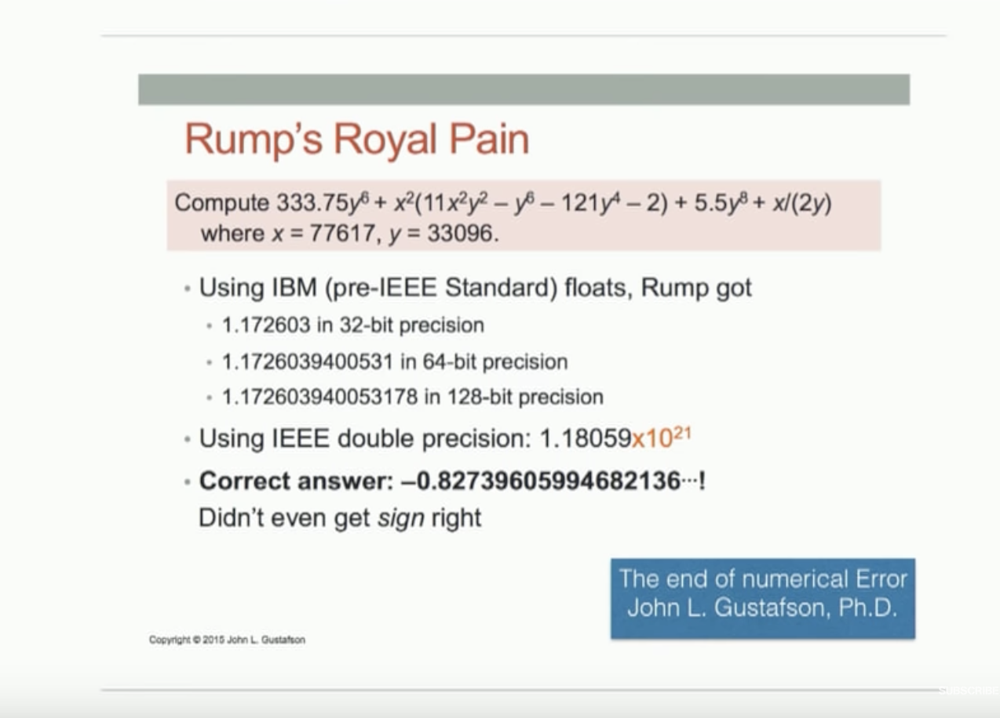

Rump's Royal Pain
- https://youtu.be/TTM_b7EJg5E?t=2061
- John L. Gustafson, PhD

Figure 1: Rump's Royal Pain
< Collapse code block
(defun rump-royal (x y) (+ (* (/ 33375 100) (expt y 6)) (* (expt x 2) (+ (* 11 (expt x 2) (expt y 2)) (- (expt y 6)) (* -121 (expt y 4)) (- 2))) (* (/ 55 10) (expt y 8)) (/ x (* 2 y)))) (list (float (rump-royal 77617 33096)) (rump-royal 77617d0 33096d0))
| -0.82739604 | -1.1805916207174113d21 |
- Stanford Seminar: Beyond Floating Point: Next Generation Computer Arithmetic
- Unum (Universal Numbers) as a solution to the problem.
- William M. Kahan (principal architect of IEEE 754 Floating point) discredited unum which John L. Gustafson (creator of unum) defended in "The Great Debate": Unum Arithmetic Position Statement - Unum Debate - Gustafson.pdf []